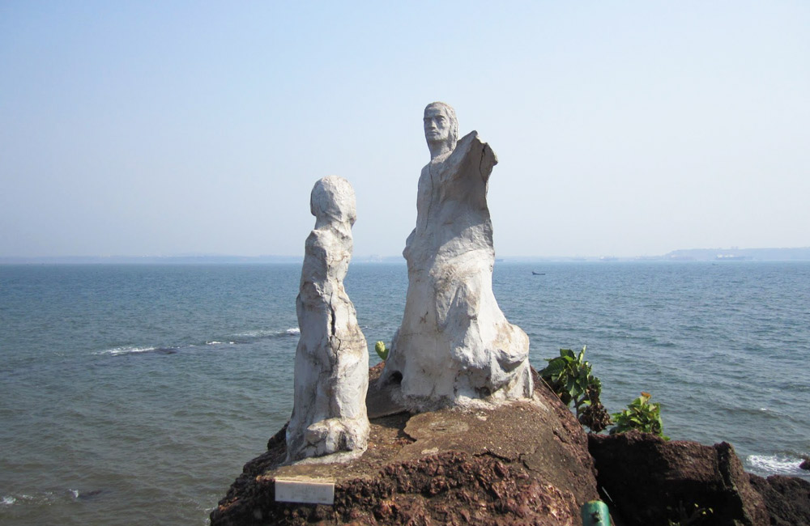
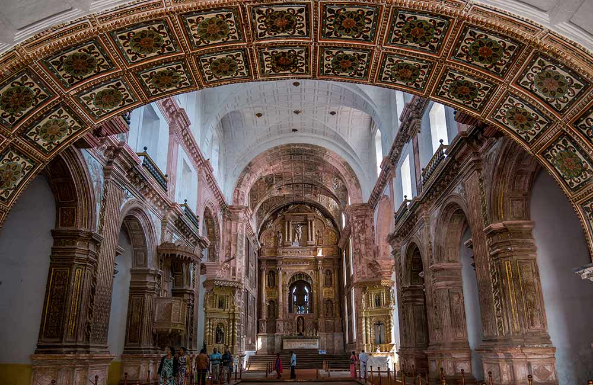

Overlooking the mighty yet gently-flowing Mandovi River, Panjim is Goa’s capital as well as the heart. It is a unique concoction of idyllic charm and lively events, with cobblestone streets, Portuguese colonial-era buildings, and lush acacia and Gulmohar trees beckoning tourists from far and wide. From serene beaches and quaint churches to impressive forts, pretty temples and even museums, Panjim or Panaji has everything that your heart seeks on a vacation. So, take a look at the 25 best places to visit in Panjim, Goa, and start planning that perfect itinerary.
1. Dona Paula Beach, Panjim
Located on the southwestern coast of India, Goa is one of the top tourist destinations in the country. This erstwhile Portuguese colony is best known for its serene beaches, forts and churches that date back to the colonial era, wildlife sanctuaries, museums, and rich culinary legacy. Goa also boasts of vibrant nightlife, thanks to the many beach shacks, pubs, and clubs dotting the region. What’s more, it is the only Indian state where you can find floating casinos.

A beach where the rivers Mandovi and Zuari meet the Arabian Sea, Dona Paula is both scenic and geographically significant. You can simply laze around under the sun, shop for knickknacks at one of the shacks, get high on water sports, or sip feni – Goa’s famous spirit made from cashews or toddy palm, while watching the sun set. Did you know that there is an intriguing and sad story associated with Dona Paula Beach too? It is believed that Dona Paula de Menezes, a viceroy’s daughter, had fallen deeply in love with a fisherman. However, since they couldn’t get married, the unfortunate lady jumped off the beach’s cliff. Strangely though, today, this beach and promenade see so many lovers who exchange sweet nothings in the salty breeze. Also, when you are here, don’t miss photographing Baroness von Leistner’s “Image of India” statue.
Best Time to Visit: October to March
Ideal duration: 1 – 2 hours
How to reach:
By Air: You can fly to Dabolim Airport (29 km from the beach) and then hire a taxi.
By Train: First, reach Karmali Railway Station (19 km from the beach) and then get a cab or bus.
By Road: Dona Paula Bus Stand, at 400 m, is the closest one. You can walk from there or take an auto.
2. Basilica of Bom Jesus, Panjim

A sprawling affair, a UNESCO World Heritage Site, Basilica of Bom Jesus is more than 400 years old. Surrounded by manicured gardens, this Roman Catholic basilica is where St. Francis Xavier’s earthly remains are treasured. It is believed that the saint had astonishing healing powers and his remains are displayed to the public every ten years. The baroque-style architecture of Basilica of Bom Jesus is Insta-worthy and the entrance is especially ornate. You can’t help but admire the lavish marble flooring, gorgeously gilded main altar, featuring St. Ignatius of Loyola’s imposing statue, and colonial-style carvings inside. Make sure you spend some time to soak in the serenity of the place and explore the art gallery.
Best Time to Visit: September to Marc
Ideal duration: 1 hours
How to reach:
By Air: Dabolim Airport is the nearest airport at 27 km. You can hire a cab from there.
By Train: Karmali Railway Station is just 2 km from the basilica. You can hire a taxi or auto from there.
By Road: The nearest bus stop is 200 m from the basilica and you can get buses from the airport or railway station easily.
Relax at the beaches of Goa
Try your luck at the floating casinos such as Deltin Royale, Casino Pride, Deltin Jaqk, Deltin Caravela, Casino Palms, etc.
Enjoy the nightlife at the pubs, nightclubs, and shacks of Goa
Shop at the local markets in Goa
Take a houseboat tour
Take part in adventure sports and water sports like kayaking, snorkeling, kite surfing, white water rafting, banana boat riding, parasailing, windsurfing, etc.
Visit a spice plantation
Get a tattoo done
Go on a dolphin safari at beaches like Baga, Sinquerim, Morjim
Watch a Tiatr, a traditional form of Konkani drama